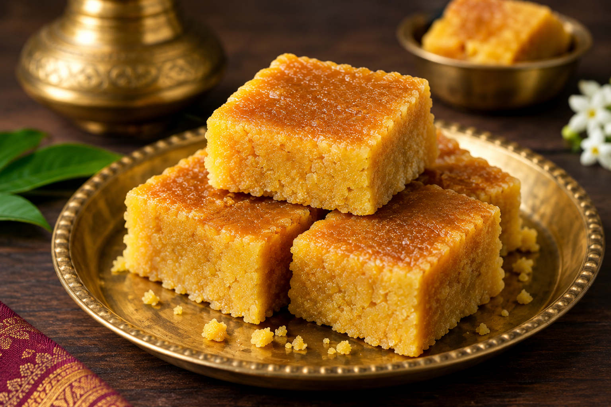
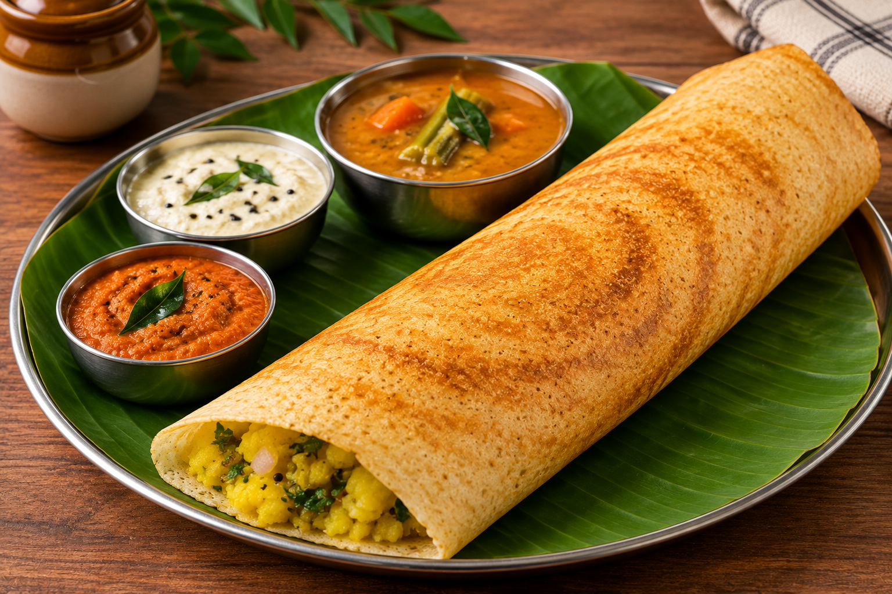
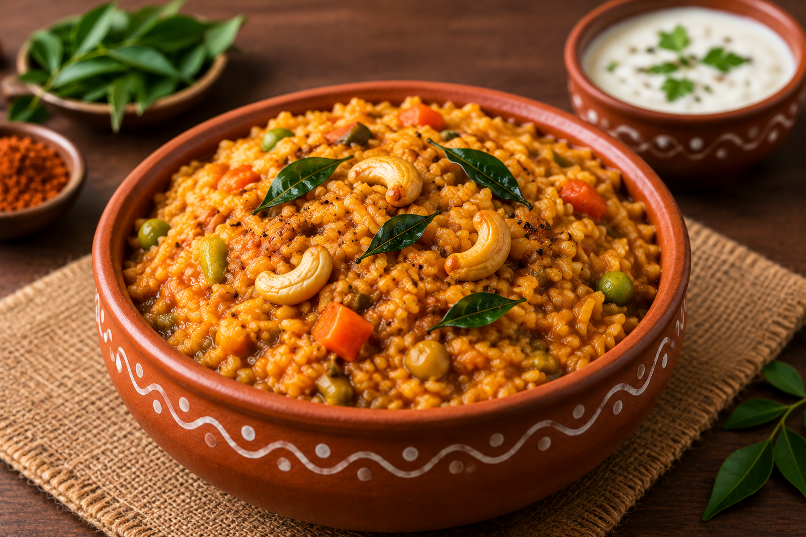

Flavours of Karnataka
Discover the traditional dishes and unique flavours of Karnataka.
Popular Karnataka Dishes

Mysore Pak
A famous traditional sweet from Karnataka.

Masala Dosa
A popular South Indian dish enjoyed across Karnataka.

Bisi Bele Bath
A traditional rice-based dish with spices and lentils.